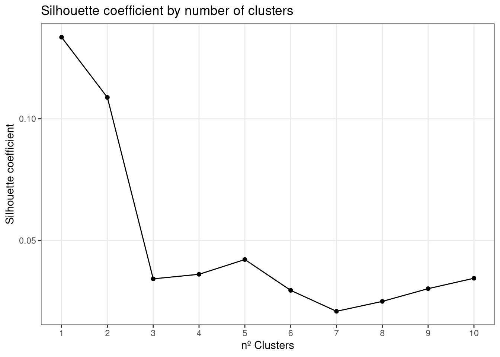
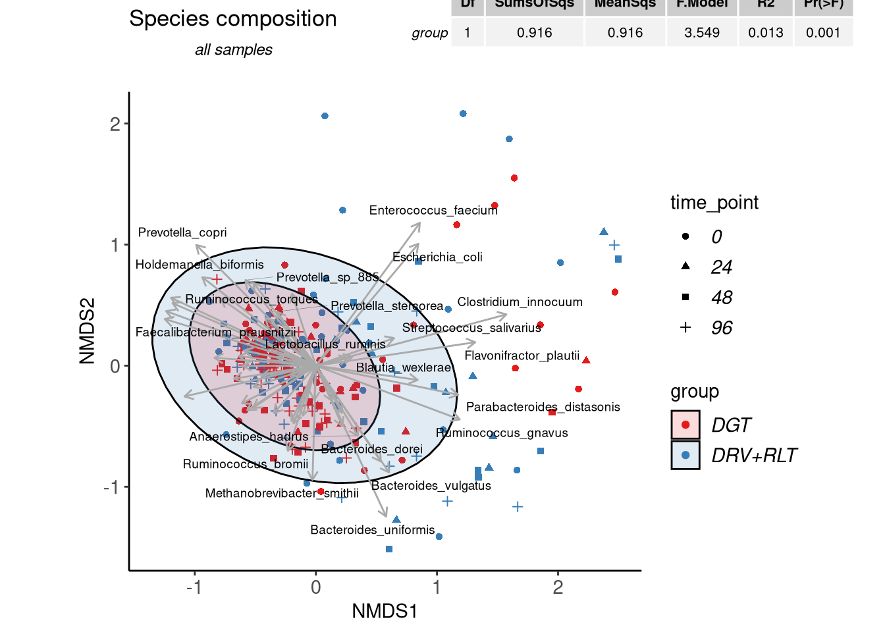

Beta Diversity and NMDS
Last updated: 2022-03-28
Checks: 6 1
Knit directory: advanz4/
This reproducible R Markdown analysis was created with workflowr (version 1.7.0). The Checks tab describes the reproducibility checks that were applied when the results were created. The Past versions tab lists the development history.
The R Markdown file has unstaged changes. To know which version of the R Markdown file created these results, you’ll want to first commit it to the Git repo. If you’re still working on the analysis, you can ignore this warning. When you’re finished, you can run wflow_publish to commit the R Markdown file and build the HTML.
Great job! The global environment was empty. Objects defined in the global environment can affect the analysis in your R Markdown file in unknown ways. For reproduciblity it’s best to always run the code in an empty environment.
The command set.seed(20211203) was run prior to running the code in the R Markdown file. Setting a seed ensures that any results that rely on randomness, e.g. subsampling or permutations, are reproducible.
Great job! Recording the operating system, R version, and package versions is critical for reproducibility.
Nice! There were no cached chunks for this analysis, so you can be confident that you successfully produced the results during this run.
Great job! Using relative paths to the files within your workflowr project makes it easier to run your code on other machines.
Great! You are using Git for version control. Tracking code development and connecting the code version to the results is critical for reproducibility.
The results in this page were generated with repository version c51687a. See the Past versions tab to see a history of the changes made to the R Markdown and HTML files.
Note that you need to be careful to ensure that all relevant files for the analysis have been committed to Git prior to generating the results (you can use wflow_publish or wflow_git_commit). workflowr only checks the R Markdown file, but you know if there are other scripts or data files that it depends on. Below is the status of the Git repository when the results were generated:
Ignored files:
Ignored: .Rhistory
Ignored: .Rproj.user/
Ignored: analysis/.Rhistory
Ignored: data/mre.rds
Untracked files:
Untracked: analysis/304_Taxonomy_DA.Rmd
Unstaged changes:
Deleted: Metadata/.~lock.2022_03_25_clean_metadata_LIMS.csv#
Deleted: Metadata/MetadataManagement/.~lock.Informacio_LIMS.xlsx#
Deleted: Metadata/MetadataManagement/.~lock.LabData.xls#
Modified: analysis/320_Beta_Diversity.Rmd
Modified: analysis/_site.yml
Modified: output/mre_data/CatalogMapping/IGC/lmm/lmm_time_point_by_group.pdf
Note that any generated files, e.g. HTML, png, CSS, etc., are not included in this status report because it is ok for generated content to have uncommitted changes.
These are the previous versions of the repository in which changes were made to the R Markdown (analysis/320_Beta_Diversity.Rmd) and HTML (docs/320_Beta_Diversity.html) files. If you’ve configured a remote Git repository (see ?wflow_git_remote), click on the hyperlinks in the table below to view the files as they were in that past version.
| File | Version | Author | Date | Message |
|---|---|---|---|---|
| Rmd | c51687a | cblazquez | 2022-03-28 | fixed workflowrs and gene richness issues |
| html | c51687a | cblazquez | 2022-03-28 | fixed workflowrs and gene richness issues |
| Rmd | 11c1e7d | cblazquez | 2022-03-28 | Code reorganized towards new structure |
R Markdown
This is an R Markdown document. Markdown is a simple formatting syntax for authoring HTML, PDF, and MS Word documents. For more details on using R Markdown see http://rmarkdown.rstudio.com.
When you click the Knit button a document will be generated that includes both content as well as the output of any embedded R code chunks within the document. You can embed an R code chunk like this:
suggested package selbal ✓suggested package DataExplorer ✓suggested package lme4 ✓suggested package merTools ✓Including Plots
You can also embed plots, for example:
myPath<-here::here()
setwd(myPath)
mymre<-readRDS("data/mre.rds")
metadata <- metar::get_metadata(mymre)@metadata_df
myphyloseq<-mymre@taxa@metaphlan@phyloseq
CategoricalVariablesDF <- get_metadata(mymre)@categorical_vals
NumericalVariablesDF <- get_metadata(mymre)@numeric_vals
LongitudinalVariablesDF <- get_metadata(mymre)@longitudinal_valsgetAbundances<-function(phyloseq, level){
collapsedPhyloseq<- phyloseq::tax_glom(phyloseq, level)
OtuTable<- phyloseq::otu_table(collapsedPhyloseq) %>%
magrittr::set_rownames(as.character(phyloseq::tax_table(collapsedPhyloseq)[,level])) %>%
as.data.frame()
return(OtuTable)
}
myAbundanceDF<- getAbundances(myphyloseq, "Species")
Top50<- myAbundanceDF %>%
mutate(sum=rowSums(.)) %>%
arrange(desc(sum)) %>%
dplyr::slice(1:50) %>%
rownames()
myNMDS <- myAbundanceDF %>%
# dplyr::filter(row.names(.) %in% Top50) %>%
t() %>%
as.data.frame() %>%
metaMDS(.,distance="bray",trymax=100,
k = nrow(unique(metadata[,CategoricalVariablesDF$CategoricalVariable[1]]))) %>%
pluck("points") %>%
as.data.frame() Square root transformation
Wisconsin double standardization
Run 0 stress 0.1697623
Run 1 stress 0.1720587
Run 2 stress 0.1772153
Run 3 stress 0.1756223
Run 4 stress 0.1702943
Run 5 stress 0.1702857
Run 6 stress 0.1757679
Run 7 stress 0.1713642
Run 8 stress 0.1731744
Run 9 stress 0.1776203
Run 10 stress 0.171627
Run 11 stress 0.177294
Run 12 stress 0.1693571
... New best solution
... Procrustes: rmse 0.01199975 max resid 0.1067578
Run 13 stress 0.1704121
Run 14 stress 0.1696382
... Procrustes: rmse 0.01990066 max resid 0.2900486
Run 15 stress 0.1734919
Run 16 stress 0.170325
Run 17 stress 0.1764676
Run 18 stress 0.1754417
Run 19 stress 0.1749623
Run 20 stress 0.1712234
Run 21 stress 0.1767592
Run 22 stress 0.1742051
Run 23 stress 0.1798622
Run 24 stress 0.1717861
Run 25 stress 0.1747514
Run 26 stress 0.1721268
Run 27 stress 0.1746827
Run 28 stress 0.1742416
Run 29 stress 0.1987398
Run 30 stress 0.1908419
Run 31 stress 0.1718071
Run 32 stress 0.1785731
Run 33 stress 0.1692765
... New best solution
... Procrustes: rmse 0.01931671 max resid 0.2904854
Run 34 stress 0.1728741
Run 35 stress 0.1751939
Run 36 stress 0.1776898
Run 37 stress 0.1703043
Run 38 stress 0.1761178
Run 39 stress 0.1734617
Run 40 stress 0.1706605
Run 41 stress 0.1936105
Run 42 stress 0.176317
Run 43 stress 0.1729472
Run 44 stress 0.1757888
Run 45 stress 0.1722784
Run 46 stress 0.1710867
Run 47 stress 0.1691974
... New best solution
... Procrustes: rmse 0.01887292 max resid 0.2908943
Run 48 stress 0.1754488
Run 49 stress 0.1717895
Run 50 stress 0.1770076
Run 51 stress 0.1712274
Run 52 stress 0.1723811
Run 53 stress 0.1693612
... Procrustes: rmse 0.01050155 max resid 0.1060428
Run 54 stress 0.1718945
Run 55 stress 0.1729089
Run 56 stress 0.1778685
Run 57 stress 0.1753687
Run 58 stress 0.1693787
... Procrustes: rmse 0.005361247 max resid 0.07405777
Run 59 stress 0.168044
... New best solution
... Procrustes: rmse 0.007275876 max resid 0.08047265
Run 60 stress 0.1717698
Run 61 stress 0.1741351
Run 62 stress 0.1760595
Run 63 stress 0.1732732
Run 64 stress 0.1785915
Run 65 stress 0.1685037
... Procrustes: rmse 0.008588173 max resid 0.07404974
Run 66 stress 0.1743048
Run 67 stress 0.1757412
Run 68 stress 0.1712457
Run 69 stress 0.1717422
Run 70 stress 0.1714691
Run 71 stress 0.1716204
Run 72 stress 0.1703337
Run 73 stress 0.1830163
Run 74 stress 0.1718598
Run 75 stress 0.1719736
Run 76 stress 0.1713407
Run 77 stress 0.1706419
Run 78 stress 0.1756059
Run 79 stress 0.1897543
Run 80 stress 0.1799509
Run 81 stress 0.1839305
Run 82 stress 0.1725234
Run 83 stress 0.1685041
... Procrustes: rmse 0.008593823 max resid 0.07405297
Run 84 stress 0.1752942
Run 85 stress 0.1809976
Run 86 stress 0.1867859
Run 87 stress 0.1731294
Run 88 stress 0.1743941
Run 89 stress 0.1698981
Run 90 stress 0.1734691
Run 91 stress 0.1759141
Run 92 stress 0.1719073
Run 93 stress 0.1799768
Run 94 stress 0.1755599
Run 95 stress 0.1765695
Run 96 stress 0.1737827
Run 97 stress 0.1902616
Run 98 stress 0.1695849
Run 99 stress 0.1704029
Run 100 stress 0.1724329
*** No convergence -- monoMDS stopping criteria:
41: no. of iterations >= maxit
59: stress ratio > sratmax # NMDS = data.frame(NMDS1 = dim_NMDS$points[,1], NMDS2 = dim_NMDS$points[,2])
BiPlotCoords<- envfit(myNMDS, t(myAbundanceDF), perm=999)
BiPlotCoordsDF <- c("MDS1","MDS2","r","pvals") %>%
set_names() %>%
map_dfr(., ~ {
if(.x %in% c("MDS1","MDS2")){
BiPlotCoords$vectors$arrows[,.x] %>%
as.numeric()
} else{
BiPlotCoords$vectors %>%
pluck(.x) %>%
as.numeric()
}
}) %>%
as.data.frame() %>%
set_names(nm=c("NMDS1","NMDS2","r","p")) %>%
dplyr::mutate(Dim1 = NMDS1*sqrt(r),
Dim2 = NMDS2*sqrt(r),
species = rownames(myAbundanceDF)) %>%
dplyr::filter(species %in% Top50)
myBrayDistMat <-vegdist(wisconsin(sqrt(t(myAbundanceDF))))NMDS by Treatment group
long_var<-LongitudinalVariablesDF$LongitudinalVariable[1]
cat_var <- CategoricalVariablesDF$CategoricalVariable[1]
link_var <- LongitudinalVariablesDF$LinkVariable[1]
id_var <- "SampleID"
myPal<-RColorBrewer::brewer.pal(name = CategoricalVariablesDF$PaletteName[1],
n=length(unique(metadata[,cat_var])))
BiPlotCoordsDF<-BiPlotCoordsDF %>%
mutate(Dim1s = Dim1*3,
Dim2s = Dim2*3)
myNMDS_DF <- myNMDS %>%
rownames_to_column(var = id_var) %>%
dplyr::full_join(., metadata, by =id_var) %>%
dplyr::select(SampleID = id_var,
NMDS1 = MDS1,
NMDS2 = MDS2,
linkVar = !!sym(link_var),
catVar = !!sym(cat_var),
LongVar = long_var)
myXmin<-min(myNMDS$MDS1)
# +(max(dim_NMDS$points[,1])-min(dim_NMDS$points[,1]))/20
myYmin<-max(myNMDS$MDS2)-(max(myNMDS$MDS1)-min(myNMDS$MDS1))
myAdonis<- adonis(myBrayDistMat~ catVar, data = myNMDS_DF) %>%
pluck("aov.tab") %>%
as.data.frame() %>%
slice(1L) %>%
magrittr::set_rownames(cat_var)
myNMDSplot<-ggplot(myNMDS_DF, aes(x=NMDS1, y=NMDS2)) +
geom_point() +
theme_bw()+
theme(panel.border=element_blank(),
panel.grid.major=element_blank(),
panel.grid.minor=element_blank(),
axis.line=element_line(colour="black"),
axis.text.x=element_text(size=11),
axis.text.y=element_text(size=11),
axis.title.x=element_text(size=11),
axis.title.y=element_text(size=11),
legend.text=element_text(size=11,face="italic"),
legend.title=element_text(size=11))+
ggtitle(expression(atop("Species composition",atop(italic("all samples"))))) +
theme(plot.title=element_text(lineheight=1,face="bold",size=13))+
coord_fixed()+
labs(fill = cat_var, color=cat_var, shape = long_var)
myNMDSBiplot<-ggplot(myNMDS_DF, aes(x=NMDS1, y=NMDS2)) +
geom_point(aes(colour=catVar, shape = as.character(LongVar))) +
scale_colour_manual(values = myPal, labels = c("DGT", "DRV+RLT")) +
scale_fill_manual(values=myPal, labels = c("DGT", "DRV+RLT"))+
theme_bw()+
theme(panel.border=element_blank(),
panel.grid.major=element_blank(),
panel.grid.minor=element_blank(),
axis.line=element_line(colour="black"),
axis.text.x=element_text(size=11),
axis.text.y=element_text(size=11),
axis.title.x=element_text(size=11),
axis.title.y=element_text(size=11),
legend.text=element_text(size=11,face="italic"),
legend.title=element_text(size=11))+
ggtitle(expression(atop("Species composition",atop(italic("all samples"))))) +
theme(plot.title=element_text(lineheight=1,face="bold",size=13))+
stat_ellipse(geom="polygon",
alpha=0.15,color="black",
aes(fill=catVar),level=0.95)+
# scale_size_manual(values = c(1:length(unique(myNMDS_DF[,"LongVar"])))/1.5) +
geom_segment(data=BiPlotCoordsDF,aes(x=0,xend=Dim1s,y=0,yend=Dim2s),
arrow = arrow(length = unit(0.2,"cm")),colour="darkgrey")+
geom_text_repel(data=BiPlotCoordsDF,aes(Dim1s,Dim2s,label=species),
size=2.5, box.padding = unit(0.25, "lines"),
segment.colour="black",
segment.alpha=0.5,
segment.size=0.10)+
coord_fixed()+
labs(fill = cat_var, color=cat_var, shape = long_var) +
annotation_custom(gridExtra::tableGrob(round(myAdonis,3),
theme = ttheme_default(base_size = 8)),ymin = 3.5, xmin=2.4)When we look at the most simple ordination before colouring by categorical variables, we see no clear separated clusters between samples. They all appear to be mostly concentrated in one big cluster that randomly spreads in the positive direction for both NMDS components.
myNMDSplot
| Version | Author | Date |
|---|---|---|
| c51687a | cblazquez | 2022-03-28 |
In a more formal analysis, the silhouette coefficient was tested for different number of clusters. This analysis found the biggest coefficient was found for n=1 clustrs, with massive drops between 2-3 and 5-6.
c(1:11) %>%
set_names() %>%
map_df(., ~{
pam(myBrayDistMat, k = .x) %>%
pluck("silinfo") %>%
pluck("avg.width")
}) %>%
t() %>%
as_data_frame() %>%
rownames_to_column(var="clusters") %>%
set_names(c("clusters", "coefficient")) %>%
ggplot(., aes(x=as.numeric(clusters), y=coefficient, group=1)) +
geom_point() +
geom_line() +
scale_x_continuous(breaks=c(1:10)) +
theme_bw() +
theme(panel.grid.minor = element_blank()) +
labs(title = "Silhouette coefficient by number of clusters",
x="nº Clusters", y = "Silhouette coefficient")
| Version | Author | Date |
|---|---|---|
| c51687a | cblazquez | 2022-03-28 |
In the same fashion, when we start identifying samples by group and Timepoint, we see no clear separation, although samples from group 1 (+DGT) group appear to be more clustered together than group 2 (DRV+RLT), which show a more diffuse “central” cluster and are more dispersed. When looking at weight of the variables, the concentric spread of the arrows can be split in two sides, one more enriched in Prevotella and another in bacteroides, which spread mostly around the 2nd component of the NMDS.
However, the Adonis test found the variable group to have a significant effect over sample distances (p<0.001), although it only accounted for a small portion of the variance
myNMDSBiplot
| Version | Author | Date |
|---|---|---|
| c51687a | cblazquez | 2022-03-28 |
sessionInfo()R version 4.0.5 (2021-03-31)
Platform: x86_64-redhat-linux-gnu (64-bit)
Running under: Fedora 34 (Workstation Edition)
Matrix products: default
BLAS/LAPACK: /usr/lib64/libflexiblas.so.3.1
locale:
[1] LC_CTYPE=en_US.UTF-8 LC_NUMERIC=C
[3] LC_TIME=en_US.UTF-8 LC_COLLATE=en_US.UTF-8
[5] LC_MONETARY=en_US.UTF-8 LC_MESSAGES=en_US.UTF-8
[7] LC_PAPER=en_US.UTF-8 LC_NAME=C
[9] LC_ADDRESS=C LC_TELEPHONE=C
[11] LC_MEASUREMENT=en_US.UTF-8 LC_IDENTIFICATION=C
attached base packages:
[1] stats graphics grDevices utils datasets methods base
other attached packages:
[1] gridExtra_2.3 cluster_2.1.2 ggrepel_0.9.1 vegan_2.5-7
[5] lattice_0.20-45 permute_0.9-7 forcats_0.5.1 stringr_1.4.0
[9] dplyr_1.0.8 purrr_0.3.4 readr_2.1.0 tidyr_1.2.0
[13] tibble_3.1.6 ggplot2_3.3.5 tidyverse_1.3.1 phyloseq_1.34.0
[17] metar_0.1.4
loaded via a namespace (and not attached):
[1] estimability_1.3 coda_0.19-4
[3] knitr_1.37 multcomp_1.4-17
[5] DelayedArray_0.16.3 data.table_1.14.2
[7] DataExplorer_0.8.2 RCurl_1.98-1.5
[9] generics_0.1.2 BiocGenerics_0.36.1
[11] TH.data_1.1-0 mixOmics_6.14.1
[13] future_1.23.0 correlation_0.7.1.1
[15] tzdb_0.2.0 bayesm_3.1-4
[17] xml2_1.3.2 lubridate_1.8.0
[19] httpuv_1.6.3 SummarizedExperiment_1.20.0
[21] assertthat_0.2.1 WRS2_1.1-3
[23] xfun_0.30 hms_1.1.1
[25] jquerylib_0.1.4 evaluate_0.15
[27] promises_1.2.0.1 DEoptimR_1.0-9
[29] fansi_1.0.2 dbplyr_2.1.1
[31] readxl_1.3.1 igraph_1.2.11
[33] DBI_1.1.1 htmlwidgets_1.5.4
[35] reshape_0.8.8 tensorA_0.36.2
[37] rARPACK_0.11-0 kSamples_1.2-9
[39] stats4_4.0.5 Rmpfr_0.8-7
[41] paletteer_1.4.0 ellipsis_0.3.2
[43] RSpectra_0.16-0 ggpubr_0.4.0
[45] backports_1.4.1 insight_0.14.5.1
[47] compositions_2.0-2 libcoin_1.0-9
[49] MatrixGenerics_1.2.1 vctrs_0.3.8
[51] Biobase_2.50.0 here_1.0.1
[53] Cairo_1.5-12.2 abind_1.4-5
[55] cachem_1.0.6 withr_2.5.0
[57] ggforce_0.3.3 robustbase_0.93-9
[59] emmeans_1.7.0 ape_5.6-2
[61] crayon_1.5.0 ellipse_0.4.2
[63] labeling_0.4.2 pkgconfig_2.0.3
[65] SuppDists_1.1-9.5 tweenr_1.0.2
[67] GenomeInfoDb_1.26.7 nlme_3.1-153
[69] statsExpressions_1.2.0 blme_1.0-5
[71] rlang_1.0.2 globals_0.14.0
[73] lifecycle_1.0.1 sandwich_3.0-1
[75] selbal_0.1.0 modelr_0.1.8
[77] cellranger_1.1.0 rprojroot_2.0.2
[79] polyclip_1.10-0 matrixStats_0.61.0
[81] datawizard_0.2.1.9000 Matrix_1.3-4
[83] mc2d_0.1-21 carData_3.0-5
[85] Rhdf5lib_1.12.1 boot_1.3-28
[87] zoo_1.8-9 reprex_2.0.1
[89] whisker_0.4 GlobalOptions_0.1.2
[91] png_0.1-7 rjson_0.2.20
[93] PMCMRplus_1.9.3 parameters_0.15.0.1
[95] bitops_1.0-7 pROC_1.18.0
[97] rhdf5filters_1.2.1 Biostrings_2.58.0
[99] workflowr_1.7.0 shape_1.4.6
[101] multcompView_0.1-8 coin_1.4-2
[103] arm_1.12-2 parallelly_1.28.1
[105] lefser_1.0.0 rstatix_0.7.0
[107] S4Vectors_0.28.1 ggsignif_0.6.3
[109] scales_1.1.1 memoise_2.0.0
[111] magrittr_2.0.2 plyr_1.8.6
[113] zlibbioc_1.36.0 compiler_4.0.5
[115] RColorBrewer_1.1-2 clue_0.3-60
[117] lme4_1.1-28 cli_3.2.0
[119] ade4_1.7-18 XVector_0.30.0
[121] listenv_0.8.0 patchwork_1.1.1
[123] MASS_7.3-54 mgcv_1.8-38
[125] ggside_0.1.3 tidyselect_1.1.2
[127] stringi_1.7.6 highr_0.9
[129] yaml_2.3.5 grid_4.0.5
[131] sass_0.4.0 tools_4.0.5
[133] parallel_4.0.5 circlize_0.4.13
[135] rstudioapi_0.13 modules_0.10.0
[137] foreach_1.5.2 git2r_0.29.0
[139] farver_2.1.0 digest_0.6.29
[141] shiny_1.7.1 networkD3_0.4
[143] BWStest_0.2.2 Rcpp_1.0.8
[145] car_3.0-12 GenomicRanges_1.42.0
[147] broom_0.7.12 performance_0.8.0.1
[149] later_1.3.0 httr_1.4.2
[151] ComplexHeatmap_2.6.2 colorspace_2.0-3
[153] rvest_1.0.2 fs_1.5.0
[155] IRanges_2.24.1 splines_4.0.5
[157] rematch2_2.1.2 multtest_2.46.0
[159] xtable_1.8-4 gmp_0.6-2.1
[161] jsonlite_1.8.0 nloptr_1.2.2.3
[163] corpcor_1.6.10 zeallot_0.1.0
[165] modeltools_0.2-23 R6_2.5.1
[167] broom.mixed_0.2.7 pillar_1.7.0
[169] htmltools_0.5.2 mime_0.12
[171] glue_1.6.2 fastmap_1.1.0
[173] minqa_1.2.4 BiocParallel_1.24.1
[175] codetools_0.2-18 mvtnorm_1.1-3
[177] utf8_1.2.2 bslib_0.3.1
[179] logger_0.2.2 survival_3.2-13
[181] rmarkdown_2.11 biomformat_1.18.0
[183] merTools_0.5.2 munsell_0.5.0
[185] GetoptLong_1.0.5 rhdf5_2.34.0
[187] GenomeInfoDbData_1.2.4 iterators_1.0.14
[189] ggstatsplot_0.9.0 haven_2.4.3
[191] reshape2_1.4.4 gtable_0.3.0
[193] bayestestR_0.11.5.1